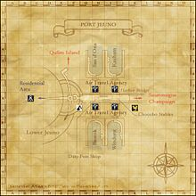

Description
Port Jeuno is a city area in Jeuno.
Map
Involved in Quests / Missions
NPCs
| Name | Location | Type |
|---|---|---|
| Anneliese | (H - 9) | — |
| Aristaeus | (H - 8) | — |
| Asolmieu | (H - 7) | — |
| Avijit | (H - 6) | Adventurer's Assistant |
| Azalearoon | (J - 8) | Chocobo Skin Enthusiast |
| Basmus | (H - 8) | Auction House Representative |
| Buntz | (H - 8) | — |
| Burnstix | (I - 8) | Outpost Teleporter |
| Caffie | (I - 8) | Chocobo Renter |
| Ceno | (H - 7) | — |
| Chaka Skitimah | (J - 8) | — |
| Challoux | (I - 8) | Standard Merchant |
| Cheli | (H - 9) | — |
| Chudigrimane | (H - 8) | Adventurer's Assistant |
| Cumetouflaix | (F - 8) | — |
| Daju | (J - 7) | — |
| Dapol | (J - 7) | — |
| Dhaso Toehprin | (J - 9) | — |
| Digaga | (H - 8) | Item Deliverer |
| Dohhel | (F - 8) | Event Scene Replayer |
| Falak | (I - 8) | — |
| Funono | (I - 9) | — |
| Garridan | (J - 8) | Event Item Storer |
| Gatita | (H - 9) | — |
| Gaura | (H - 10) | Adventurer's Assistant |
| Gavin | (I - 7) | — |
| Gekko | (H - 8) | Standard Merchant |
| Guddal | (I - 7) | — |
| Haubijoux | (H - 7) | — |
| Illauvalahaut | (I - 7) | — |
| Imasuke | (E - 6) | — |
| Inesh | (H - 9) | — |
| Jaha Amariyo | (H - 8) | — |
| Jaipal | (I - 6) | Adventurer's Assistant |
| Jhuo Halmanzoh | (J - 7) | — |
| Karl | (H - 8) | — |
| Khumo Daramasteh | (J - 8) | — |
| Kochahy-Muwachahy | (K - 8) | Conquest Overseer; Jeuno Guard |
| Kouang | (I - 8) | Auction House Representative |
| Kuya-Moya | (I - 9) | — |
| Leffquen | (J - 8) | Weather Checker |
| Leyla | (H - 8) | Standard Merchant |
| Marnie | (G - 8) | Map Viewer |
| Moulloie | (H - 7) | — |
| Najib | (I - 10) | Adventurer's Assistant |
| Naravime | (H - 7) | — |
| Narsha | (J - 8) | Chocobo Renter |
| Naurmaire | (K - 8) | — |
| Nikki | (H - 9) | — |
| Omiro-Zamiro | (J - 9) | — |
| Phouminnet | (H - 7) | — |
| Pitantimand | (H - 7) | — |
| Pranab | (H - 9) | — |
| Puhn Dapojal | (I - 9) | — |
| Purequane | (H - 7) | — |
| Rachocho | (J - 9) | — |
| Raging Lion | (H - 8) | Adventurer's Assistant |
| Ramicharaux | (H - 8) | — |
| Red Ghost | (G - 8) | — |
| Rilve-Hitolve | (I - 8) | Auction House Representative |
| Rinzei | (I - 8) | — |
| Roupatour | (H - 7) | — |
| Sagheera | (I - 8) | Limbus |
| Sanosuke | (H - 8) | — |
| Sapladrepoin | (I - 8) | Auction House Representative |
| Saprut | (J - 8) | — |
| Shami | (H - 8) | Seal/Crest Storage and Exchange |
| Silent Lynx | (H - 9) | — |
| Squintrox Dryeyes | (G - 8) | — |
| Supiroro | (J - 8) | Windurst Airship Time |
| Tautorie | (I - 7) | — |
| Tsolag | (I - 7) | — |
| Veujaie | (I - 8) | Item Deliverer |
| Vikhu Nakuaino | (I - 9) | — |
| White Beetle | (H - 9) | — |
| Yon Boskoti | (J - 9) | — |
| Yurugu-Homurugu | (E - 8) | Residence Renter |
| Zedduva | (H - 9) | — |
| Zona Shodhun | (E - 8) | Adventurer's Assistant |
| Zuah Lepahnyu | (J - 8) | Title Changer |
References
External references describe their own server or retail rules. Documented Zenith changes take precedence.
Map credits: Map 1 — HorizonXI Wiki. Original game maps © SQUARE ENIX; redrawn maps retain the credited authorship and license.

Additional level-75 reference


|
The transportation capital of Vana'diel, the port of Jeuno provides round-the-clock access to the nations of San d'Oria, Windurst and Bastok, along with providing airship service to Kazham. With access by foot to both the Qufim region (via Qufim Island) and the Mindartia Continent (via Sauromugue Champaign, not to mention chocobo stables and access to the Jeuno Auction House, the Jeuno Port provides adventures with unprecedented access to both zones and items. Obtaining the Port Jeuno mapConnecting Areas
|
Quests Started Here
| Quest | Type | Starter | Location | Reputation |
| BCNM | BCNM | Shami(Orb Seller) | (H-8) | -- |
| Child's Play | General | Karl | (H-8) | ? |
| Kazham Airship Pass | Travel | Guddal | (I-7) | -- |
| Pretty Little Things | Mog House Exit Upgrade |
Zona Shodhun | (E-8) | 1 |
| The Circle of Time | (BRD AF3) | Imasuke | (E-6) | -- |
| The Antique Collector | Map | Imasuke | (E-6) | 4 |
Fishing
| All Watersides | Cap |
|---|---|
| 5 | |
| 10 | |
| 17 | |
| 27 | |
| 39 | |
| 96 | |
| 0 | |
| 0 | |
| 0 | |
| 0 | |
| 0 |
NPCs Found Here
|
|
Adapted from Eden Wiki: Port Jeuno · Contributors and history · CC BY-SA 4.0. Revision 45571. Layout, links and optional background text adapted for Zenith.